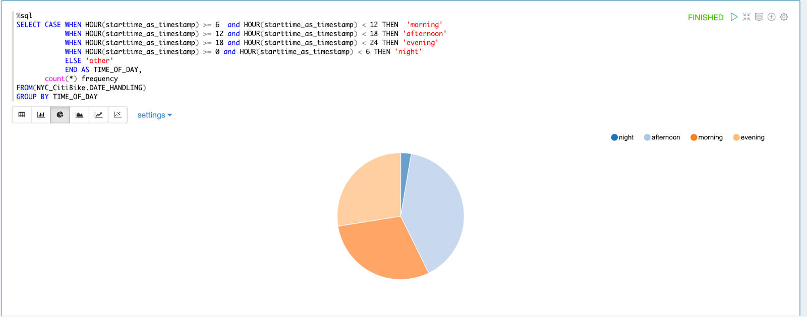
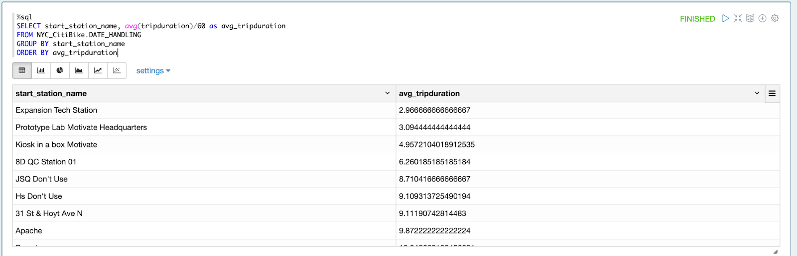

這篇 codelab 想藉由Incorta Notebook 的 SQL，分析 NYC Citibike 的資料，介紹簡單好入門的 SQL 運算應用，因此需要使用到 NYC Citibike 資料，可以先進入 NYC Citibike 網站下載資料。
NYC Citibike 網站：
Schema → +New → Material View → Choose Language → Edit in Notebook


- 啟始站
- 終點站
- 借車時間
- 還車時間
利用 SELECT FROM 選取特定需要的欄位，在此我們選了 start_station_name, end_station_name, starttime_as_timestamp, stoptime_as_timestamp 四個欄位，可以大概看出每台自行車是幾點幾分從哪一站被借出，幾點幾分在哪一站還車的。
%sql
SELECT start_station_name, end_station_name, starttime_as_timestamp, stoptime_as_timestamp
FROM NYC_CitiBike.DATE_HANDLING
ORDER BY starttime_as_timestamp- 年
以年作為分類，計算每一年自行車被租借次數，並畫出次數分配圖
%sql
SELECT year(starttime_as_timestamp) as Year, COUNT(*)
FROM NYC_CitiBike.DATE_HANDLING
GROUP BY Year
ORDER BY Year- 月份
以月份作為分類，計算一年中的每個月自行車被租借次數，並畫出次數分配圖
%sql
SELECT month(starttime_as_timestamp) as Month, COUNT(*)
FROM NYC_CitiBike.DATE_HANDLING
GROUP BY Month
ORDER BY Month- 季
以季作為分類，計算一年中的每個季自行車被租借次數，並畫出次數分配圖
%sql
SELECT quarter(starttime_as_timestamp) as Quarter, COUNT(*)
FROM NYC_CitiBike.DATE_HANDLING
GROUP BY Quarter
ORDER BY Quarter- 星期幾
以星期作為分類，計算一週中的每一天（星期幾）自行車被租借次數，並畫出次數分配圖
%sql
SELECT dayofweek(starttime_as_timestamp) as day_of_week, COUNT(*)
FROM NYC_CitiBike.DATE_HANDLING
GROUP BY day_of_week
ORDER BY day_of_week- 假日
以平日、假日作為分類，計算平日和假日自行車被租借次數，並畫出次數分配圖
%sql
SELECT CASE WHEN dayofweek(starttime_as_timestamp) >=1 and dayofweek(starttime_as_timestamp) <=5 THEN 'weekdays'
WHEN dayofweek(starttime_as_timestamp) >=6 and dayofweek(starttime_as_timestamp) <=7 THEN 'weekends'
END as weekdays_or_weekends
, COUNT(*) as counts
FROM NYC_CitiBike.DATE_HANDLING
GROUP BY 1- 幾點
以小時作為分類，計算一天中的每個小時自行車被租借次數，並畫出次數分配圖
%sql
SELECT hour(starttime_as_timestamp) hour, COUNT(*)
FROM NYC_CitiBike.DATE_HANDLING
GROUP BY hour
ORDER BY hour- 早中晚
以每6小時作為分類，6點~12點定義為早上，12點~18點定義為下午，18點~24點定義為傍晚，0點~6點定義為夜晚，計算一天中的早、中、晚、半夜自行車被租借次數，並畫出次數分配圖
%sql
SELECT CASE WHEN HOUR(starttime_as_timestamp) >= 6 and HOUR(starttime_as_timestamp) < 12 THEN 'morning'
WHEN HOUR(starttime_as_timestamp) >= 12 and HOUR(starttime_as_timestamp) < 18 THEN 'afternoon'
WHEN HOUR(starttime_as_timestamp) >= 18 and HOUR(starttime_as_timestamp) < 24 THEN 'evening'
WHEN HOUR(starttime_as_timestamp) >= 0 and HOUR(starttime_as_timestamp) < 6 THEN 'night'
ELSE 'other'
END AS TIME_OF_DAY,
count(*) frequency
FROM(NYC_CitiBike.DATE_HANDLING)
GROUP BY TIME_OF_DAY由圖可見，下午是最多人使用腳踏車的時段，其次是早上和傍晚，夜晚幾乎沒有被使用
# 長條圖
# 圓餅圖

- 使用的時間長短
# 每一站每台腳踏車被使用的時間 (秒)
%sql
SELECT start_station_name, bikeid, tripduration
FROM NYC_CitiBike.DATE_HANDLING
ORDER BY start_station_name, tripduration# 每台腳踏車被使用的總時數 (小時)
%sql
SELECT bikeid, sum(round(tripduration/3600)) as duration_in_hour
FROM NYC_CitiBike.DATE_HANDLING
GROUP BY bikeid
ORDER BY sum(round(tripduration/60)) DESC # trip durattion 的平均數、標準差、變異數
%sql
SELECT avg(tripduration) as avg_duratiion,
variance(tripduration) as var_duration,
stddev(tripduration) as sd_duration
FROM NYC_CitiBike.DATE_HANDLING# Trip duration 次數分配圖
# 幾乎所有借還時間都在1小時內
%sql
SELECT CASE WHEN tripduration <= 3600 THEN "01 hour"
WHEN tripduration >= 3600 AND tripduration <= 3600*2 THEN "02 hours"
WHEN tripduration >= 3600*2 AND tripduration <= 3600*3 THEN "03 hours"
WHEN tripduration >= 3600*3 AND tripduration <= 3600*4 THEN "04 hours"
WHEN tripduration >= 3600*4 AND tripduration <= 3600*5 THEN "05 hours"
WHEN tripduration >= 3600*5 AND tripduration <= 3600*6 THEN "06 hours"
WHEN tripduration >= 3600*6 AND tripduration <= 3600*7 THEN "07 hours"
WHEN tripduration >= 3600*7 AND tripduration <= 3600*8 THEN "08 hours"
WHEN tripduration >= 3600*8 AND tripduration <= 3600*9 THEN "09 hours"
WHEN tripduration >= 3600*9 AND tripduration <= 3600*10 THEN "10 hours"
WHEN tripduration >= 3600*10 AND tripduration <= 3600*11 THEN "11 hours"
WHEN tripduration >= 3600*11 AND tripduration <= 3600*12 THEN "12 hours"
WHEN tripduration >= 3600*12 AND tripduration <= 3600*13 THEN "13 hours"
WHEN tripduration >= 3600*13 AND tripduration <= 3600*14 THEN "14 hours"
WHEN tripduration >= 3600*14 AND tripduration <= 3600*15 THEN "15 hours"
WHEN tripduration >= 3600*15 AND tripduration <= 3600*16 THEN "16 hours"
WHEN tripduration >= 3600*16 AND tripduration <= 3600*17 THEN "17 hours"
WHEN tripduration >= 3600*17 AND tripduration <= 3600*18 THEN "18 hours"
WHEN tripduration >= 3600*18 AND tripduration <= 3600*19 THEN "19 hours"
WHEN tripduration >= 3600*19 AND tripduration <= 3600*20 THEN "20 hours"
WHEN tripduration >= 3600*20 AND tripduration <= 3600*21 THEN "21 hours"
WHEN tripduration >= 3600*21 AND tripduration <= 3600*22 THEN "22 hours"
WHEN tripduration >= 3600*22 AND tripduration <= 3600*23 THEN "23 hours"
WHEN tripduration >= 3600*23 AND tripduration <= 3600*24 THEN "24 hours" END as duratuion_category,
COUNT(*)
FROM NYC_CitiBike.DATE_HANDLING
GROUP BY duratuion_category
ORDER BY duratuion_category前十名借最多次的借車站
%sql
SELECT start_station_name, COUNT(*) number_of_lending
FROM NYC_CitiBike.DATE_HANDLING
GROUP BY start_station_name
ORDER BY COUNT(*) DESC 前十名借最多次的還車站
%sql
SELECT end_station_name, COUNT(*)
FROM NYC_CitiBike.DATE_HANDLING
GROUP BY end_station_name
ORDER BY COUNT(*) DESC 前十名最多次借還同一個地點的站
%sql
SELECT start_station_name, end_station_name, COUNT(*)
FROM NYC_CitiBike.DATE_HANDLING
WHERE start_station_name = end_station_name
GROUP BY start_station_name, end_station_name
ORDER BY COUNT(*) DESC 前十名借最多次的借車站
%sql
SELECT start_station_name, COUNT(*)
FROM NYC_CitiBike.DATE_HANDLING
WHERE year(starttime_as_timestamp) BETWEEN 2016 and 2018
GROUP BY start_station_name
ORDER BY COUNT(*) DESC
前十名還最多次的還車站
%sql
SELECT end_station_name, COUNT(*)
FROM NYC_CitiBike.DATE_HANDLING
WHERE year(stoptime_as_timestamp) BETWEEN 2016 and 2018
GROUP BY end_station_name
ORDER BY COUNT(*) DESC前十名最多次借還同一個地點的站
%sql
SELECT start_station_name, end_station_name, COUNT(*)
FROM NYC_CitiBike.DATE_HANDLING
WHERE year(starttime_as_timestamp) BETWEEN 2016 and 2018
AND start_station_name = end_station_name
GROUP BY start_station_name, end_station_name
ORDER BY COUNT(*) DESC最少使用的車站
#發現有些車站竟然只有被借或還一次
%sql
SELECT station_name, COUNT(*) as used_frequency, min(used_time) as first_used, max(used_time) as lastet_used
FROM(
SELECT start_station_name as station_name, starttime_as_timestamp as used_time
FROM NYC_CitiBike.DATE_HANDLING
UNION ALL
SELECT end_station_name, stoptime_as_timestamp
FROM NYC_CitiBike.DATE_HANDLING
)
GROUP BY station_name
ORDER BY COUNT(*), first_used借還車比率懸殊的車站
%sql
SELECT t1.start_station_name as station_name, t1.count_of_start, t2.count_of_end,
(t1.count_of_start/(t1.count_of_start+t2.count_of_end)) as propotion_of_start,
(t2.count_of_end/(t1.count_of_start+t2.count_of_end)) as propotion_of_end,
abs((t1.count_of_start/(t1.count_of_start+t2.count_of_end))-(t2.count_of_end/(t1.count_of_start+t2.count_of_end))) as propotion_of_diff
FROM (SELECT start_station_name, COUNT(*) count_of_start
FROM NYC_CitiBike.DATE_HANDLING
WHERE year(starttime_as_timestamp) BETWEEN 2016 and 2018
GROUP BY start_station_name) as t1
INNER JOIN (SELECT end_station_name, COUNT(*) count_of_end
FROM NYC_CitiBike.DATE_HANDLING
WHERE year(stoptime_as_timestamp) BETWEEN 2016 and 2018
GROUP BY end_station_name) as t2
ON t1.start_station_name = t2.end_station_name
ORDER BY propotion_of_diff DESC 按月來看租車是否有季節性
%sql
SELECT month(starttime_as_timestamp) as Month, COUNT(*)
FROM NYC_CitiBike.DATE_HANDLING
WHERE year(stoptime_as_timestamp) BETWEEN 2016 and 2018
GROUP BY Month
ORDER BY Month 按週來看租車是否有季節性
%sql
SELECT weekofyear(starttime_as_timestamp) as Week_of_Year, COUNT(*)
FROM NYC_CitiBike.DATE_HANDLING
WHERE year(stoptime_as_timestamp) BETWEEN 2016 and 2018
GROUP BY Week_of_Year
ORDER BY Week_of_Year按每星期中的星期幾是否不同
%sql
SELECT dayofweek(starttime_as_timestamp) as Day_of_Week, COUNT(*)
FROM NYC_CitiBike.DATE_HANDLING
WHERE year(stoptime_as_timestamp) BETWEEN 2016 and 2018
GROUP BY Day_of_Week
ORDER BY Day_of_Week
以上這些敘述統計
可以再以車站來做區分
平均租車時間
# 所有租借平均租車時間 962.49 秒，16.04分鐘
%sql
SELECT avg(tripduration) as avg_tripduration, avg(tripduration)/60 as avg_tripduration_in_minutes
FROM NYC_CitiBike.DATE_HANDLING# 借出站的平均租借時間
%sql
SELECT start_station_name, avg(tripduration)/60 as avg_tripduration
FROM NYC_CitiBike.DATE_HANDLING
GROUP BY start_station_name
ORDER BY avg_tripduration
# 還車站的平均租借時間
%sql
SELECT end_station_name, avg(tripduration)/60 as avg_tripduration
FROM NYC_CitiBike.DATE_HANDLING
GROUP BY end_station_name
ORDER BY avg_tripduration # 同站租還的平均租借時間
%sql
SELECT start_station_name, end_station_name, avg(tripduration)/60 as avg_tripduration
FROM NYC_CitiBike.DATE_HANDLING
WHERE start_station_name = end_station_name
GROUP BY start_station_name, end_station_name
ORDER BY avg_tripduration看租車時間的次數分配
# 每5分鐘為一個級距，圖形呈現右偏
%sql
SELECT CASE WHEN tripduration <= 60*5 THEN "05 minute"
WHEN tripduration >= 60*5 AND tripduration <= 60*10 THEN "10 minutes"
WHEN tripduration >= 60*10 AND tripduration <= 60*15 THEN "15 minutes"
WHEN tripduration >= 60*15 AND tripduration <= 60*20 THEN "20 minutes"
WHEN tripduration >= 60*20 AND tripduration <= 60*25 THEN "25 minutes"
WHEN tripduration >= 60*25 AND tripduration <= 60*30 THEN "30 minutes"
WHEN tripduration >= 60*30 AND tripduration <= 60*35 THEN "35 minutes"
WHEN tripduration >= 60*35 AND tripduration <= 60*40 THEN "40 minutes"
WHEN tripduration >= 60*40 AND tripduration <= 60*45 THEN "45 minutes"
WHEN tripduration >= 60*45 AND tripduration <= 60*50 THEN "50 minutes"
WHEN tripduration >= 60*50 AND tripduration <= 60*55 THEN "55 minutes"
WHEN tripduration >= 60*55 AND tripduration <= 60*60 THEN "60 minutes"
WHEN tripduration > 60*60 THEN "Over 1 hour"
END as duratuion_category,
COUNT(*)
FROM NYC_CitiBike.DATE_HANDLING
GROUP BY duratuion_category
ORDER BY duratuion_category
最高租車時間
# 最高租車時間為19510049秒，大約是325167.5分鐘，大約是5419.5小時，大約是225.8天
%sql
SELECT tripduration, tripduration/60 as min, tripduration/3600 as hour, tripduration/86400 as day
FROM NYC_CitiBike.DATE_HANDLING
ORDER BY tripduration DESC 最低租車時間
# 最低租車時間為60秒，可能是有規定未滿1分鐘以1分鐘計算，租車時間是60秒的有2584筆交易
%sql
SELECT tripduration , COUNT(*)
FROM NYC_CitiBike.DATE_HANDLING
GROUP BY tripduration
ORDER BY tripduration